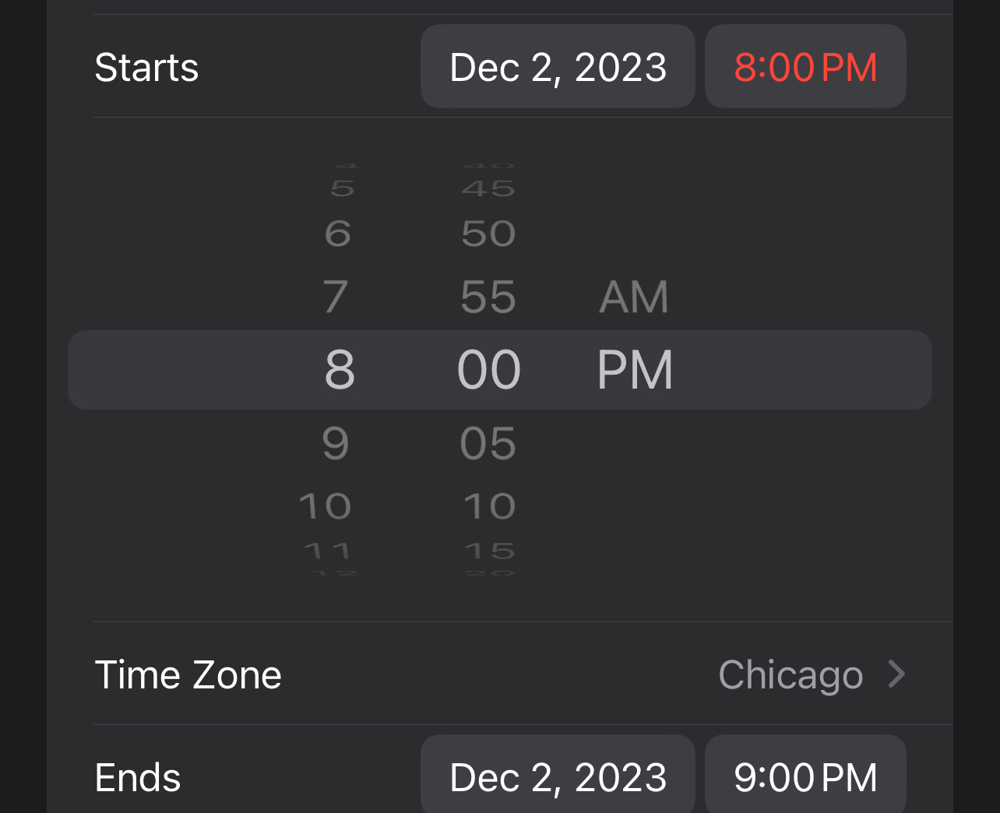

This is an example of a bad design of when trying to select a year. When trying to input your birthday for
something it is very incovinent to start on the current year because most likely the person
entering is
older and will have to scroll to find their year.
Here is another bad exapmle of having to scroll for something.
